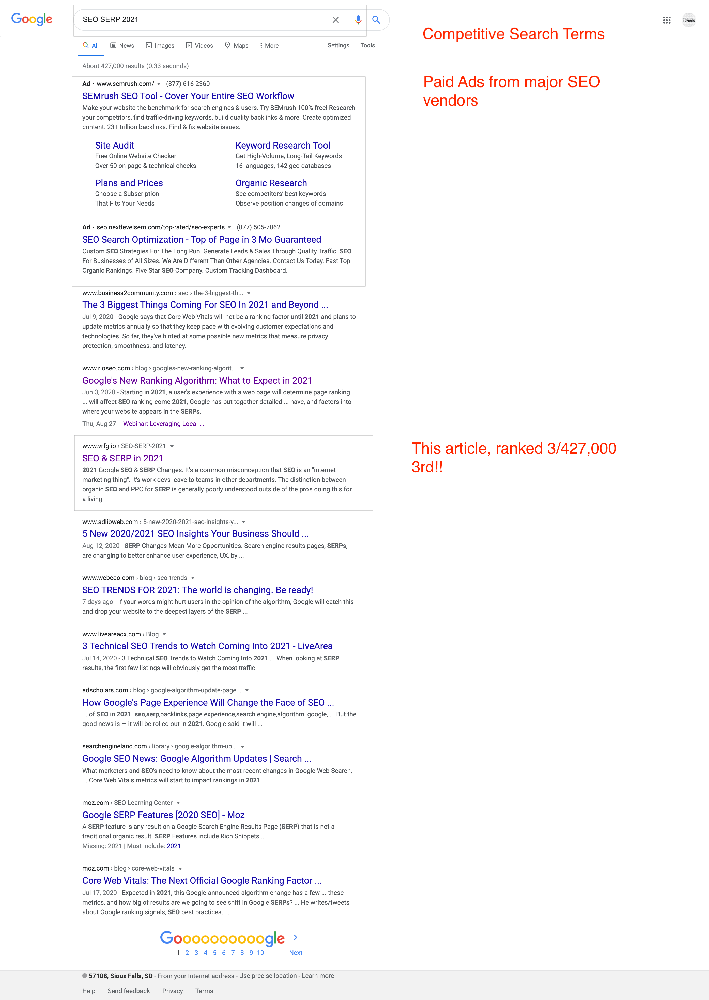

SEO & SERP in 2021
It's a common misconception that Search Engine Optimization is an "internet marketing thing" and work developers leave to teams in other departments. The distinction between organic SEO and Pay Per Click advertising (PPC) for SERP is generally misunderstood outside of the professionals doing this for a living...
MORNINGTUNDRA | August 2020This summer (May 2020), Google clarified its commitment to a significant algorithm change. This will make SEO more technically complex and increase the confusion and overlap with PPC.
Whether you're a backend-gal, a front-end guy, or a full-stack team, Google has put us all on notice with this post from their Director of Engineering for Search Ecosystems. He's trying to warn us without causing panic or revealing the new secret sauce. And take note of the last word of his title, it hints at the potential scope of the coming changes.
The signals used to rank content and price ads are maturing and heading for a growth spurt. Native apps on Google Play, cross-platform Progressive Web Apps, simple flat pages, and all the way through the stack to Google Merchant Center — all will be impacted.
The proposed changes to organic search will have secondary impacts on voice, video, and app search thanks to the renewed emphasis on structured data. So don't be fooled, SEO is no longer just about ranking HTML pages.
Painful changes are coming to developers, your workflow, and your toolchain. We have 6-12 months to shift the way we think about our roles in SEO, our use of the DOM, and that back catalog of code and content we cranked out over the years.
This will affect the way we build for the internet — from the footprint of JS promises, to how we load and use client-side libs. And if you're a fat-framework advocate (Angular, React, Ember, etc), you have a lot of work ahead.
For devs working on templating engines, SEO-oriented algo changes are not high priorities or even design considerations. Yet these pages and UI's are fat and chatty and this will affect page rank signals.
With this in mind, Google is pushing novel design patterns before these changes land. While AMP may not be the final-solution (many claim it's dead for anything but news sites), it offers a pre-caching design pattern for your high-performing pages. So don't say you weren't warned as this is neither sudden or unexpected.
The ranking algorithm and Google Rank Brain will receive these updates sometime in late 2021, with a promised 6 months heads-up. This will be as disruptive a change as the Hummingbird update in 2013, and would appear to be a logical extension.
The nature of the changes can be observed through the Google Search Console, which devs and dev-ops should be paying close attention to.

"You do use the Google Search Console, don't you? ...Do you even lift bro?!"

Core Web Vitals are a deceptively simple entry point for an enormous set of measures. These measures (or signals) fall into domains ranging from Ux to semantic meaning.
While <title>, <meta>, and <h> tags are still relevant, their relative importance is on the decline. As is writing content to rank with key-word stuffing, bulk-buying backlinks, and other shady tactics.
The space on the page for organic results is also declining. The number of paid search results is growing and currently consumes about 50% of the first page results (depending on the search term). Many commentators predict the highly-prized first page will eventually show only paid content.
There is a slow but undeniable tide purging organic results from page 1 and the competition for relevancy is going to be bloody.
1. It's ALL about Ux
To understand how Google is thinking about these factors, consider the Lighthouse tool in Chrome Dev Tools. This measures user experience signals in four baskets of measures - Performance, Accessibility, Best Practice, & SEO (I'll ignore the 5th for now).

"Many SEO pseudo-professionals continue to claim page speed is not and will never be a ranking factor. They have their heads in the sand and are going to get their posteriors royally kicked."
Within each category, dozens of measures will require developer engagement to improve. Google has already released vast amounts of technical documentation and several new tools. So if you haven't started eating the proverbial elephant, you're running out of time.
2. The Need For Speed
The Performance category alone will force devs to choose carefully how to load assets and build the DOM. Prefetching and async loading of code assets is key, and to be combined with lazy-loading media assets.
Achieving an acceptable score across desktop and mobile devices require code refactoring around Core Web Vitals. Specifically these two with the heaviest score weights,
- Largest Contentful Paint (LCP), a measure of loading performance, not to exceed 2.5 seconds
- Total Blocking Time (TBT), and proxy for First Input Delay (FID) not to exceed 100 milliseconds
This basket of technical measures requires hands on engineering effort and code refactoring to move the needle. And in doing so, your pages begin to resemble Webapps, the first step towards embracing AMP.

Until recently only elite developers working on high traffic assets had to worry about this kind of client side code performance. After all, the network and the client has always been the bottleneck. Some notable trends have reversed this paradigm and gone mostly unnoticed.
- Highly performant CDNs are ubiquitous, caching not just your code and assets, but all the libs too. This has been a performance bandaid for ballooning page-weight and prolific HTTP requests.
- Microservice providers all seem to be migrating into the same mega datacenters, getting swallowed by Google App Engine, Microsoft Azure, and Amazon Web Services. Even the CDNs are colocated there too.
- Client runtime environments have massively improved with the V8 Javascript engine swallowing up almost every competitor and now embedded virtually everywhere.
The result is a highly interconnected, versatile programming ecosystem that encourages poor code hygiene - bloated, chatty pages. Tolerance is running thin with users increasingly impatient and paranoid. Slow, confusing pages which leak verbose pixel data, will score poorly and rank lower.
Take the seemingly soft domain of SEO. You'd be forgiven for thinking this was about page content and judicious use of long-tail keywords. This signal includes measures like the size of tap targets. Interactive elements like buttons and links should be large enough (48x48px), with enough padding, to be easy to tap without overlapping onto other elements. Scoring well here will require developers to optimize UI code.
Ux SEO is a quantitative, science-based, and deeply technical field spanning color theory to visual cognition. Google cares about it and will score you on it. It is a significant customer satisfaction signal that deeply affects their primary business - Advertising.
If you know nothing about the technical aspects of visual design and information consumption, you'd do well to start with the books by Edward Tufte.
2. Relevancy & Semantic Meaning
The days of phluff-pages stuffed with keywords in <h> tags are long over. Huge strides have been made in NLP, graph analytics, and AI, allowing algorithms to measure meaning and context. Put simply, crap content won't rank, no matter how fast it's delivered.
In its simplest form, it begins with JavaScript Object Notation for Linked Data (JSON-LD). A standards-based, multi-dimensional array describing meaning and context. It is one of several solutions that will have to coexist in the <head> alongside Opengraph schema (og:).
Structured page data is currently an underserved space for assistive dev tools, and we're likely to see new widgets, helpers, plugins, and packages emerge. All designed to give your code and content good SEO signals and score well.
3. The New Landscape
Devs are used to things constantly changing and the work needed to keep code, apps, and pages up to date. Curiously, if you follow the dev, PPC and SEO communities, they seem largely unaware or indifferent. To be fair, there are woke outliers but the majority are probably just too busy bringing home the bacon to care.
It's true, we probably have 12 months to get good and ready for this, but in the meantime, start on that elephant.
4. EDIT UPDATE
Many of the techniques described in this post were put in practice on this page with impressive and surprising results. The search terms 'SEO' and 'SERP' are highly competitive organically and expensive in PPC. The chances of ranking well for these terms are low. This is especially true for domains like this one, with no related backlinks, low Domain Authority, and relatively few pages.
This page was hand tuned to achieve high Lighthouse scores. The structured data was been meticulously crafted and validated with the Google Structured Data tool. The finished page was then submitted through the Google Search Console.

Within less than a week, this report was ranking on Page #1 at position #3!
